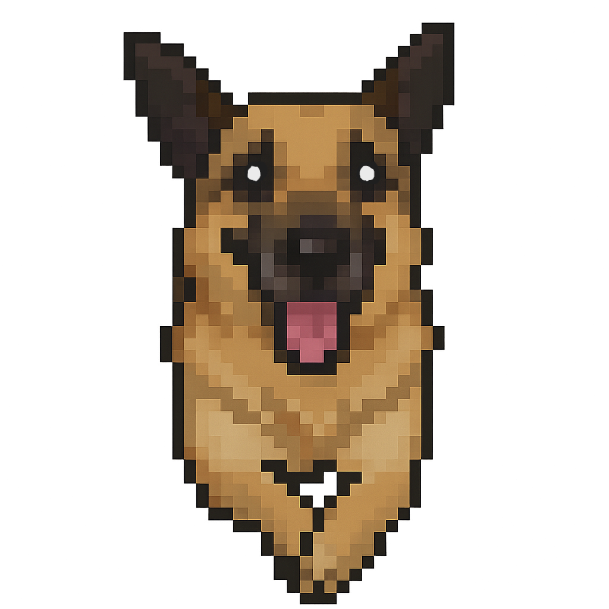
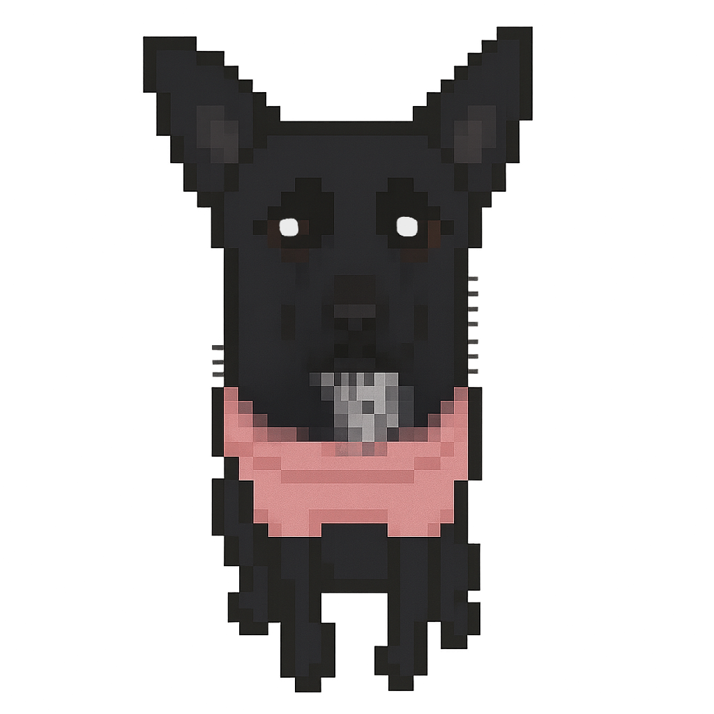
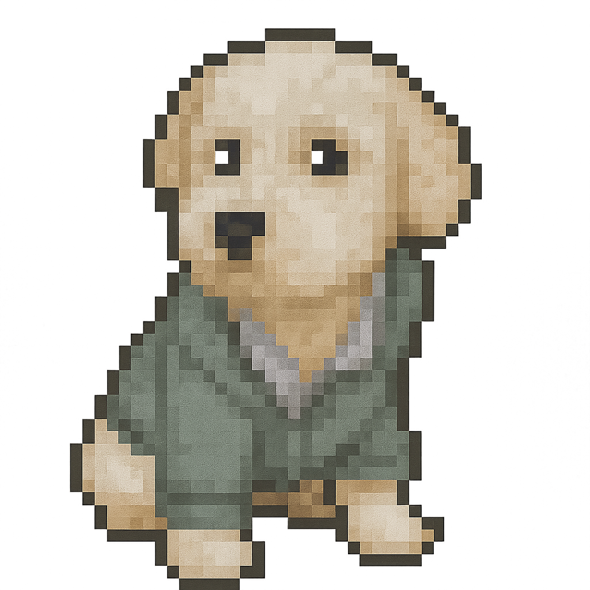
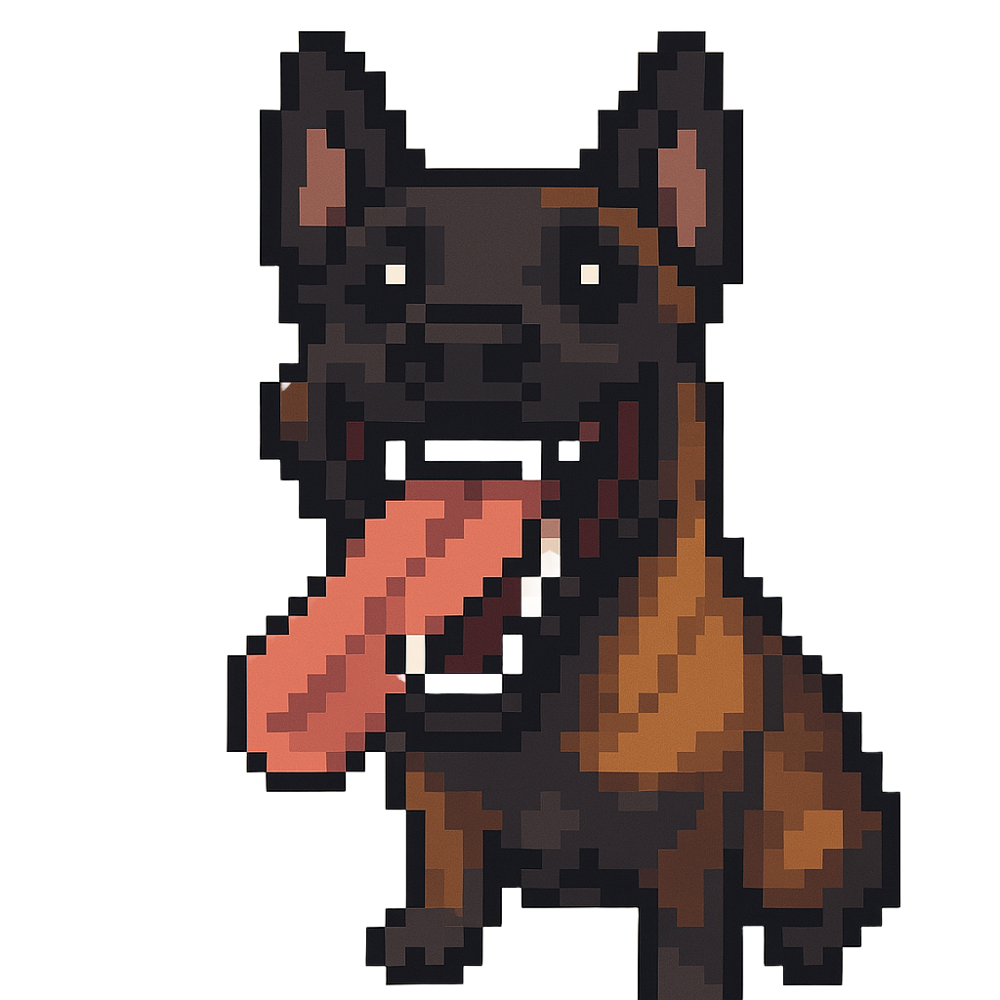
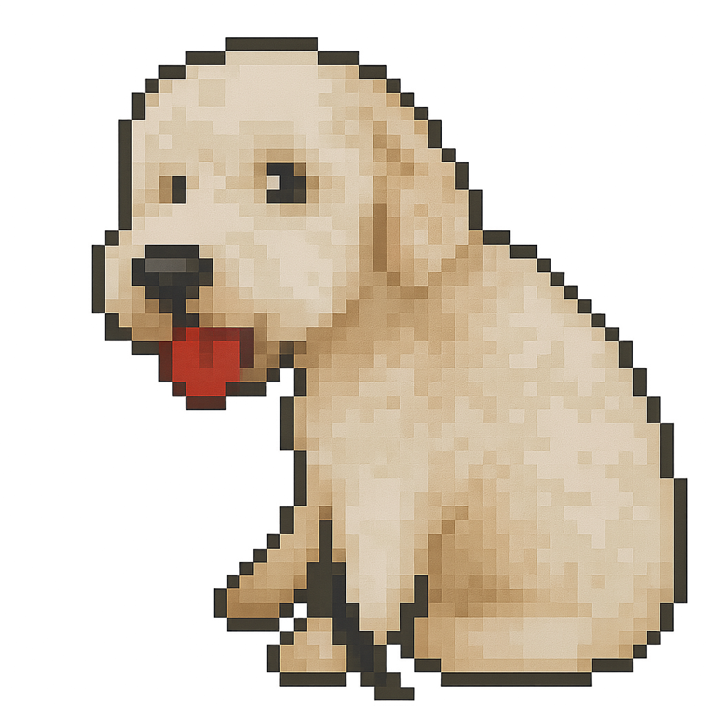
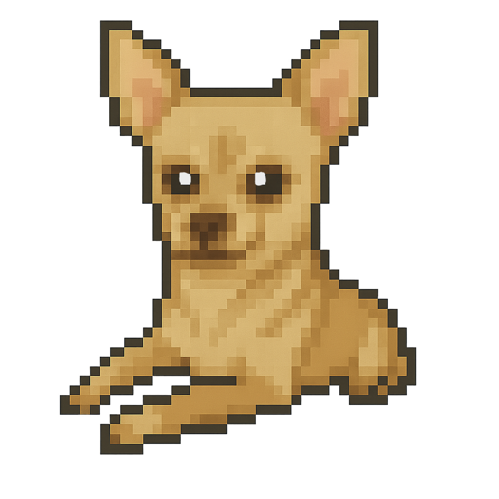

Below are simulations I made and styled with HTML, CSS, and JavaScript. The core theme is modeling real
life systems with ODEs and PDEs. I manually compute all integrals, derivatives, and differential equation updates.
I do not use any mathametical libraries or imports other than the JavaScript math functions for rounding, random number generations, and the floor, trig, and exponential functions. Everything is built with the basic
mathematical operations like +, -, *, /. I do use libraries for rendering LaTeX code and 3D visuals. Most of the source code for my programs can be found on my github.
Best Simulations
- Autonomous Navigation and Control Through Saturn’s Rings (In Progress)
- Navier-Stokes Fluid Simulation

- Earth and Moon Space Travel (In Progress)
- My Own Reaction-Diffusion System
- Gray-Scott Reaction-Diffusion Simulation
- Interactive 3D Phase Space Simulation
- Bifurcation Explorer
- Fisher-KPP
- Live Phase Portraits
- Three-Body Simulation
- The Chaotic (Double) Pendulum
- Customizable Solar System Simulation 
- Black Hole Simulation
- Predator-Prey Simulation